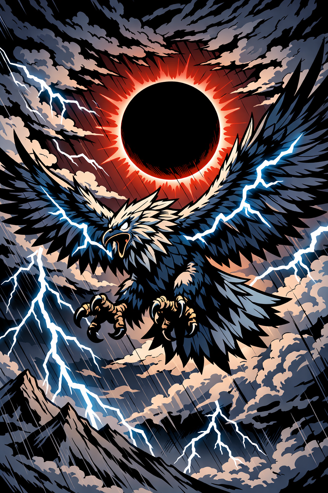

Perception
An event, symbol, relationship, phrase, or coincidence produces an emotional charge. Something in the outer world asks to be noticed.
A philosophy of conscious reflection
Synchronic Self Theory explores the feedback relationship between the inner psyche and the world through which it experiences itself.
It’s rooted in the principle as above, so below; as within, so without. The theory asks what happens when perception, projection, symbolism, and lived experience begin forming one continuous pattern.
The Reflective Field
Synchronic Self Theory proposes that consciousness exists in an ongoing relationship with its environment. The psyche projects beliefs, fears, expectations, unresolved conflicts, and archetypal patterns into experience. The world then appears to return those patterns through relationships, symbols, repetition, language, conflict, and coincidence.
This doesn’t mean every external event is consciously created, and it doesn’t mean suffering is earned through incorrect thinking. It means the mind continually participates in the reality it perceives. What we carry within influences what we notice, how we interpret it, how we respond, and what those responses invite from the world around us.
The universe projects back what you project into it.
Under this framework, synchronicity becomes more than a coincidence. It becomes a moment of correspondence between an internal psychological state and an external experience, joined not necessarily by direct cause, but by meaning.
The Integration Cycle
Synchronic Self Theory organizes conscious integration into four recurring stages.
An event, symbol, relationship, phrase, or coincidence produces an emotional charge. Something in the outer world asks to be noticed.
The psyche interprets the experience through its existing beliefs, wounds, expectations, and unresolved archetypal patterns.
The individual recognizes the reflection. The question changes from “Why is this happening to me?” to “What’s this showing me?”
Insight becomes embodied through changed behavior, emotional regulation, creative expression, communication, or conscious choice.
The goal isn’t to escape the ego, defeat the shadow, or interpret every coincidence as prophecy. It’s to shorten the distance between projection and recognition until awareness becomes a natural form of self-correction.

As Above, So Below
The psyche doesn’t move toward wholeness by choosing one side of a polarity and destroying the other. It develops by learning to hold the tension between apparent opposites: light and darkness, reason and intuition, creation and destruction, identity and transformation.
The phoenix and thunderbird represent different expressions of transformative power. One rises through fire. The other moves through storm. Neither promises comfort. Both reveal that change often arrives through the forces we initially resist.
In Synchronic Self Theory, symbols aren’t fixed instructions delivered from somewhere else. They become mirrors through which consciousness encounters its own structure.
Read the philosophical journalWays of Entering the Mirror
Philosophical works on synchronicity, projection, Jungian psychology, archetypes, consciousness, identity, and the integration of opposites.
Explore the journalSymbolic readings centered on reflection, archetypal patterns, personal insight, and the relationship between the questioner and the story emerging through the cards.
View tarot readingsRune casting as a language of pattern, tension, movement, and consequence, interpreted through conscious reflection rather than deterministic prediction.
Explore rune castingOriginal Projects
Synchronic Self Theory extends beyond a single text. Its ideas are being developed through philosophical writing, visual symbolism, tarot, archetypal systems, and projects exploring the relationship between the dreamer and the dream.
View Current ProjectsIn Development
A Jungian tarot system behind the looking glass.
An expanded symbolic deck exploring individuation, shadow, synchronicity, paradox, perception, and the possibility that the dreamer and the dream are reflections of the same consciousness.
Follow its developmentDiscernment Without Cynicism
Synchronic Self Theory doesn’t teach that every coincidence is a command, that consciousness controls every external event, or that symbolic interpretation should replace evidence, medical care, mental-health support, or personal responsibility.
A pattern becomes useful when it repeats meaningfully, increases coherence, and produces a constructive change in thought, behavior, or relationship. Reflection should make a person more grounded, compassionate, and capable of choice, not more fearful or certain that ordinary rules no longer apply to them.
Begin the Conversation
Contact Synchronic Self Theory about readings, philosophical discussion, media, collaboration, or current projects.
Contact Rory Kelly